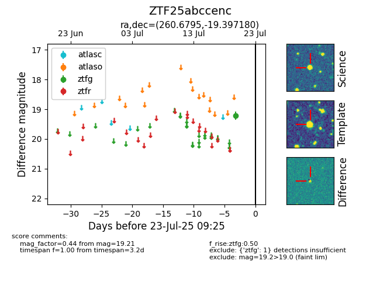

Target ZTF25abccenc at 2025-07-23 11:52, see:
FINK: fink-portal.org/ZTF25abccenc
Lasair: lasair-ztf.lsst.ac.uk/objects/ZTF25abccenc
ALeRCE: alerce.online/object/ZTF25abccenc
alt names
ZTF25abccenc (ztf,fink)
coordinates:
equatorial (ra, dec) = (260.6795,-19.39718)
galactic (l, b) = (5.2637,+9.52489)
photometry
last ztfg=19.21
1 ztfg detections
